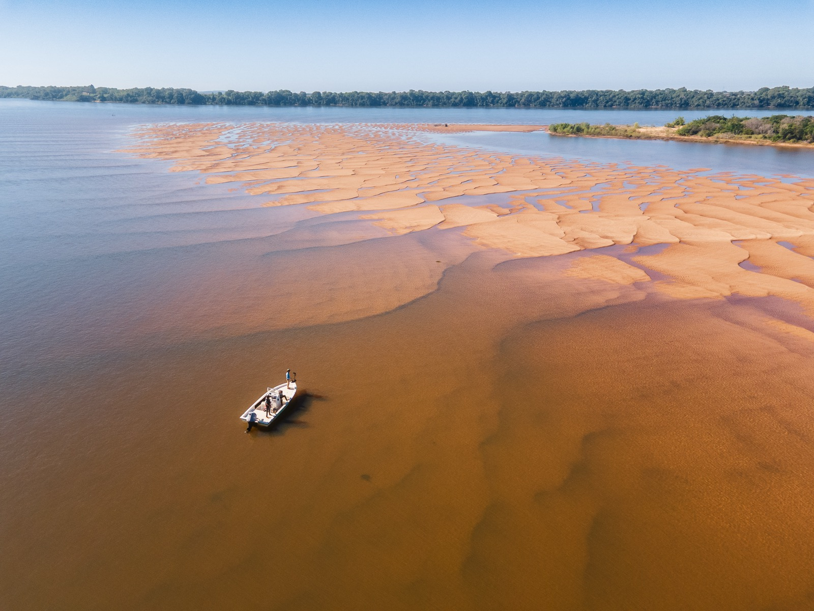
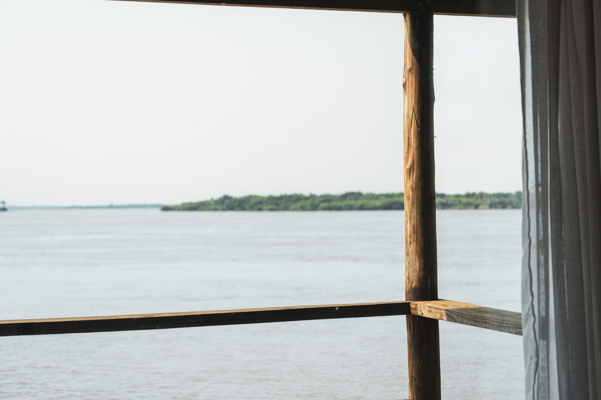
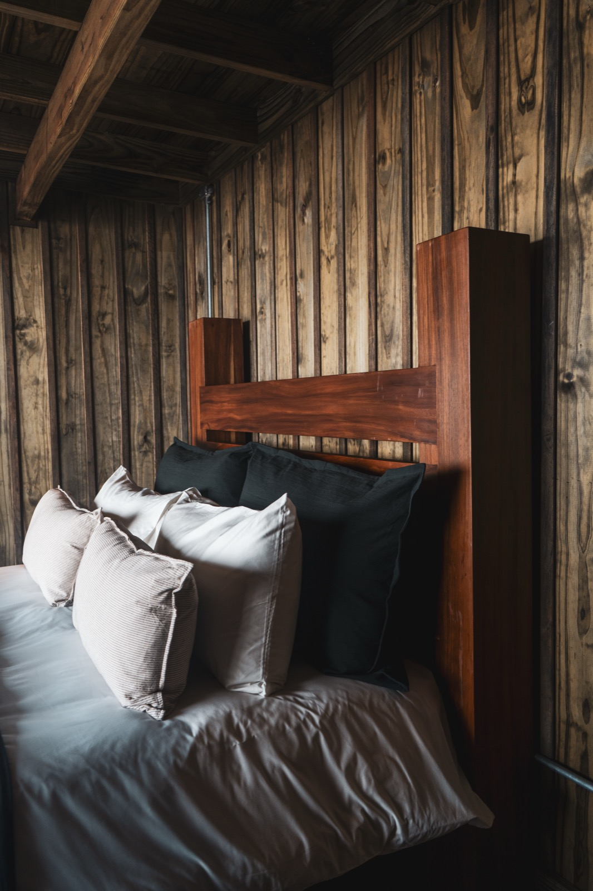
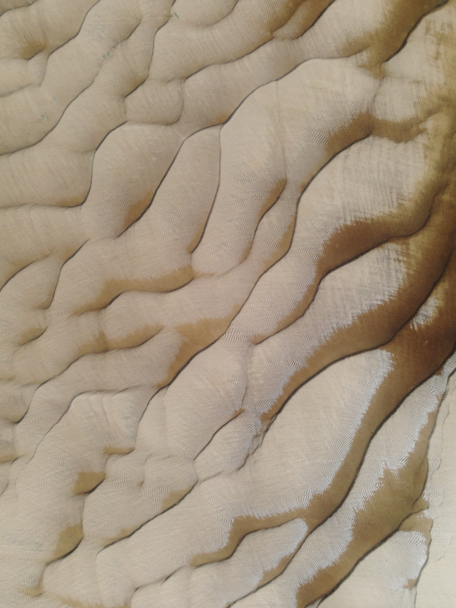
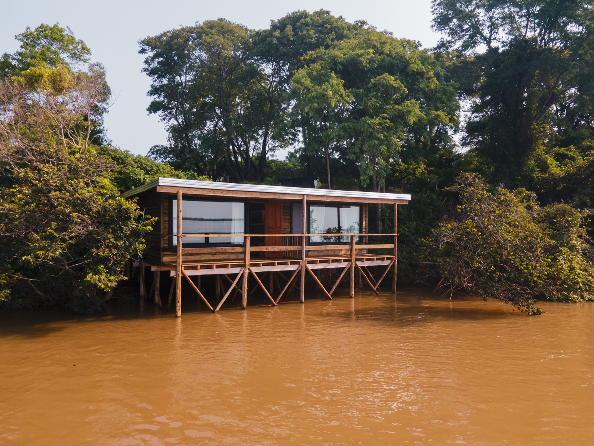
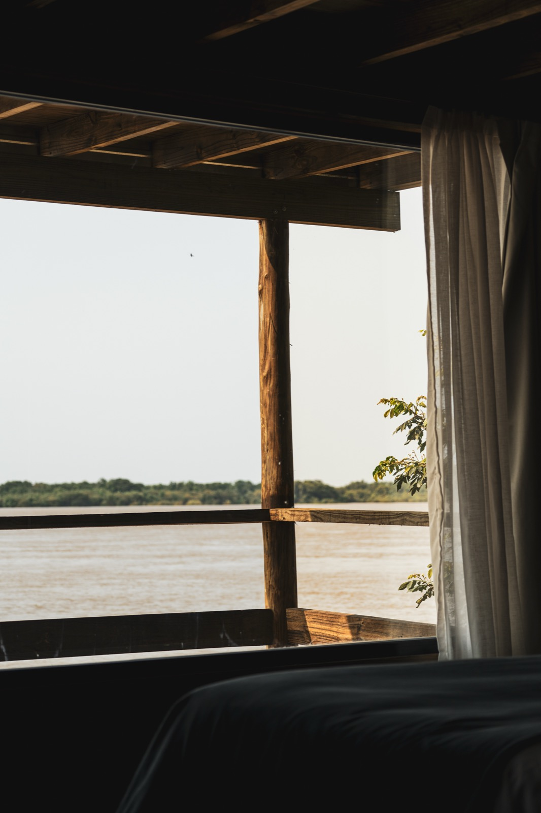
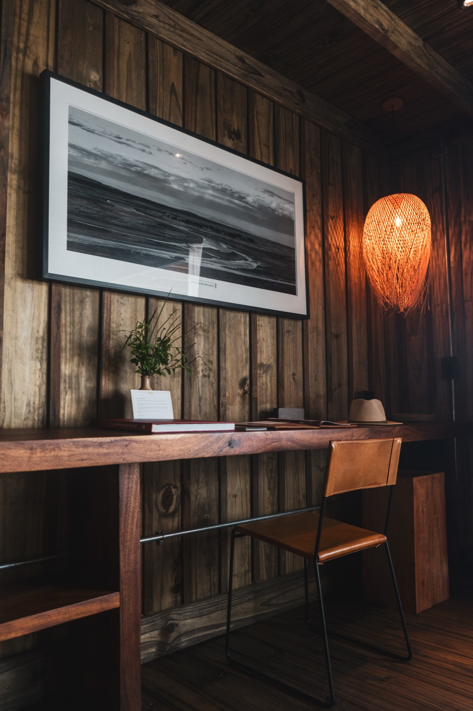
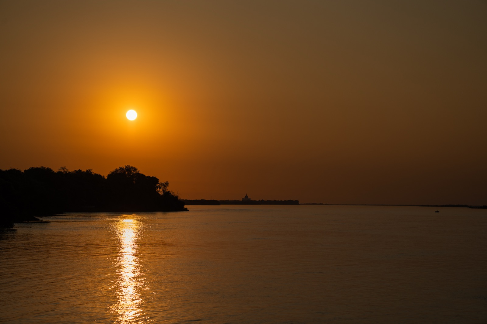
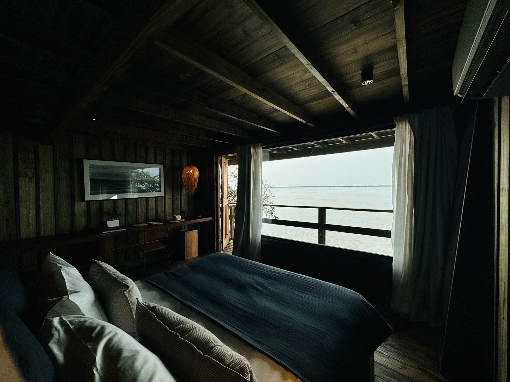
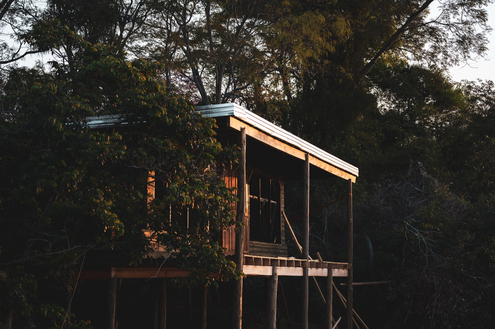

Suindá Lodge
Casa ribereña en los esteros del noroeste argentino
CLIMA /
Húmedo Subtropical
BIOMA /
Humedales
TERRENO /
7.000 m²
ÁREA CUBIERTA /
120 m²
UBICACIÓN /
Corrientes, Argentina


Este proyecto inspiró el nombre del estudio. Situado en el límite entre la tierra y el agua, como un timbó, se apoya mínimamente en el suelo, mientras que la mayor parte se eleva sobre el nivel del río.
El Paraná, dinámico y cambiante, se caracteriza por sus lluvias regionales, sudestadas y crecidas. Es un territorio inestable, de límites difusos y en constante variación.



La construcción, al igual que el árbol, se destaca por su resiliencia. Su permanencia en este entorno volátil se basa en su capacidad de adaptarse a las variaciones del nivel del agua, las tormentas frecuentes, la alta humedad y las elevadas temperaturas.
La estructura, rígida pero a la vez liviana y permeable, está construida con madera local y responde a las condiciones del sitio. La galería frontal protege de la radiación solar y favorece la ventilación cruzada. Hacia el contrafrente, el interior se abre a la selva, donde la vegetación regula la temperatura y permite el ingreso de aire fresco.



Al atardecer, cuando el sol se posa sobre el río, el paisaje se transforma a través de la luz.
Rodeado de timbós, cuya forma protege de la lluvia y el sol, el lodge encuentra refugio en la naturaleza y la utiliza a su favor, sin alterarla. El interior logra una atmósfera equilibrada, incluso frente a un clima exterior cambiante.
Una celebración del habitar simple frente a una naturaleza exuberante.

